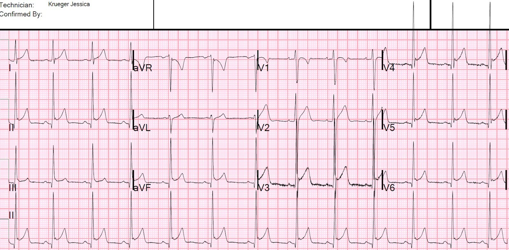
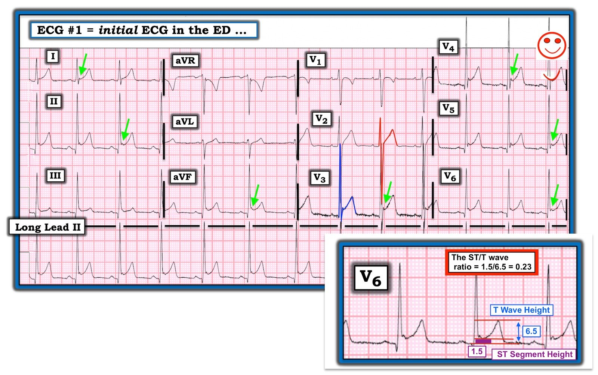

11/09/2020 — Nam 18 tuổi đau ngực và ST chênh lên lan tỏa
Bản dịch tiếng Việt của bài "An 18 year old with chest pain and diffuse ST Elevation" – Dr. Smith’s ECG Blog. Giữ nguyên toàn bộ 4 hình ảnh của bản gốc.
Một bệnh nhân 18 tuổi than đau ngực.
Đây là điện tâm đồ của bệnh nhân:


Bạn nghĩ gì?
Bình luận về điện tâm đồ
Nhiều người lập tức nghĩ đây là viêm màng ngoài tim. Nhưng thực ra, đây là hình ảnh tái cực sớm nền của bệnh nhân, đã thấy trên các điện tâm đồ trước đó khi bệnh nhân đến viện vì co giật (không phải đau ngực). Phần lớn trường hợp ST chênh lên lan tỏa là biến thể bình thường.
–Có ST chênh lên lan tỏa.
–Có khía hình thành rõ ở điểm J tại tất cả các chuyển đạo có ST chênh lên. STE này được gọi là biến thể bình thường. Khía làm cho điện tâm đồ đủ tiêu chuẩn tái cực sớm thực sự (hiện được định nghĩa là khác biệt với STE biến thể bình thường và thậm chí không cần có STE — xem tài liệu tham khảo bên dưới). Việc những khía như vậy có xuất hiện cả trong viêm màng ngoài tim hay không thì chưa chắc chắn; tôi ngờ rằng chúng có ở những bệnh nhân bị viêm màng ngoài tim chồng lên … [người dịch: nguyên văn bị thiếu từ ở chỗ này]. Chúng tôi đã nghiên cứu dấu hiệu này ở nhồi máu cơ tim thành trước so với STE biến thể bình thường ở V2-V4, và thấy rằng có ít nhất 1 khía cao ít nhất 0.5 mm ở ít nhất 1 trong các chuyển đạo V2-V6 ở 31% trường hợp biến thể bình thường và 14% trường hợp nhồi máu cơ tim thành trước.
–ST chênh xuống soi gương duy nhất là ở aVR, nhưng điều này không có ý nghĩa (bất cứ khi nào có STE lan tỏa, thì BẮT BUỘC phải có STD ở aVR, vì aVR là cực (-) của một chuyển đạo nằm giữa I và II). Ngoài aVR, chúng tôi thấy rằng ST chênh xuống soi gương không gặp trong viêm màng ngoài tim.
–Có đoạn PR chênh xuống rất ít, dù rằng ngay cả một mức PR chênh xuống nào đó cũng là bình thường; PR chênh xuống sâu, ít nhất 0.8 mm, được ghi nhận là khá đặc hiệu cho viêm màng ngoài tim, dù dữ liệu còn rất ít ỏi.
–Có một mức dốc xuống của đoạn TP, được gọi là dấu hiệu Spodick, vốn được cho là một dấu hiệu tốt của viêm màng ngoài tim. Amal Mattu gần đây đã chứng minh rằng dấu hiệu Spodick không nhạy với viêm màng ngoài tim, và dấu hiệu này chưa bao giờ được xác lập (thậm chí chưa từng được nghiên cứu) như một cách phân biệt viêm màng ngoài tim với tái cực sớm biến thể bình thường.
Xem các bình luận bổ sung của Ken Grauer bên dưới
Biến thể bình thường PHỔ BIẾN HƠN RẤT NHIỀU so với viêm màng ngoài tim.
Bình luận chung
Tuy vậy, theo kinh nghiệm của tôi, các bác sĩ có một kiểu thích thú nào đó khi chẩn đoán viêm màng ngoài tim trên điện tâm đồ. Sự thích thú này gây ra thiên lệch.
Troponin không phát hiện được và bệnh nhân hết hẳn triệu chứng sau khi dùng thuốc kháng acid.
Điều đó có quan trọng không?
Có. Hãy xem ca này do Pendell Meyers viết khi còn là sinh viên y khoa:
31 Year Old Male with RUQ Pain and a History of Pericarditis. Submitted by a Med Student, with Great Commentary on Bias! (Nam ba mươi mốt tuổi đau hạ sườn phải và có tiền sử viêm màng ngoài tim. Do một sinh viên y khoa gửi, kèm bình luận rất hay về thiên lệch!)
Trong ca của Dr. Meyers, những người điều trị đã mặc định rằng vì bệnh nhân từng được chẩn đoán viêm màng ngoài tim trước đó (dựa trên điện tâm đồ có STE lan tỏa), nên STE lan tỏa lần này lại là viêm màng ngoài tim. Nhưng thực ra bệnh nhân CHƯA BAO GIỜ bị viêm màng ngoài tim, mà đang bị thuyên tắc phổi, bệnh đã bị bỏ sót chẩn đoán vì sự mặc định này.
Chẩn đoán điện tâm đồ ở đây là STE biến thể bình thường. Đây CŨNG là tái cực sớm thực sự.
Tái cực sớm thực sự khác biệt với ST chênh lên biến thể bình thường. Nó được định nghĩa trong một bài đồng thuận năm 2015 trên JACC là một khía ở cuối QRS cao ít nhất 1 mm, có hoặc không kèm ST chênh lên.
Tái cực sớm thực sự có liên quan đến nguy cơ rung thất lâu dài nếu gặp ở người trung niên. Xem bài báo này trên NEJM năm 2009. Xem thêm tài liệu tham khảo về vấn đề này trong bài đồng thuận nêu trên.

===================================
BÌNH LUẬN CỦA TÔI, bởi KEN GRAUER, MD (11/9/2020):
===================================
Dr. Smith đã nhắn cho tôi bản ghi được trình bày ở trên cho ca hôm nay. Ông hỏi tôi các câu sau:
- Chẩn đoán LÀ GÌ?
- TẠI SAO bạn nói vậy?
Thông tin lâm sàng duy nhất tôi được cung cấp là: “Nam thanh niên đau ngực.” Tôi không có lợi thế biết rằng đã có một điện tâm đồ trước đó.
- Cho rõ ràng — tôi đã đưa lại điện tâm đồ #1, và đánh dấu một số dấu hiệu để minh họa nhận định của tôi (Hình 1):


DIỄN GIẢI CỦA TÔI về điện tâm đồ #1: Tôi cho rằng bản ghi này gợi ý nhiều nhất đến một biến thể tái cực. Diễn giải có hệ thống của tôi như sau:
- Nhịp trong điện tâm đồ #1 là nhịp xoang với tần số thay đổi nhẹ — do đó là loạn nhịp xoang. Mọi khoảng (PR, QRS, QTc) đều bình thường. Trục mặt phẳng trán bình thường, ở +75 độ, tạo nên một trục QRS khá “đứng”.
- Về lớn các buồng tim — không có dấu hiệu LAA hay RAA. Biên độ QRS rõ ràng tăng — với mức chồng lấn các phức bộ ở chuyển đạo V2 và V3 lớn đến mức khó đếm điện thế. Cho rõ ràng — tôi đã tô màu các phức bộ QRS ở những chuyển đạo này. Sóng S ở chuyển đạo V2 đo được 28 mm (sóng S màu ĐỎ ở V2) — và sóng R ở chuyển đạo V3 là 34 mm (sóng R màu XANH LAM ở V3). Biên độ QRS cũng tăng tương tự ở nhiều chuyển đạo khác.
- ĐIỂM THEN CHỐT (PEARL) #1: NẾU bệnh nhân này là người lớn tuổi hơn — thì một số tiêu chuẩn điện thế cho LVH mà tôi đã bàn chi tiết trong Bình luận của tôi ở bài ngày 20 tháng Sáu năm 2020 trên Dr. Smith’s ECG blog sẽ dễ dàng được thỏa mãn. Nhưng biên độ QRS thường tăng ở người trẻ tuổi (tức là, dưới ~35 tuổi) — điều đó có nghĩa là độ đặc hiệu đối với LVH của mức điện thế tăng mà ta thấy ở điện tâm đồ #1 là hạn chế.
- ĐIỂM THEN CHỐT (PEARL) #2: Ngoài việc làm hạn chế độ đặc hiệu của tiêu chuẩn điện thế cho LVH — lý do khác khiến việc nhận ra biên độ QRS tăng đáng kể đến mức nào ở rất nhiều chuyển đạo của điện tâm đồ #1 là quan trọng — là vì mức tương đối của ST chênh lên tại điểm J được coi là “bình thường” sẽ phụ thuộc theo tỷ lệ vào biên độ QRS ở chuyển đạo đang được đánh giá.
Tiếp tục diễn giải bằng cách xem xét Thay đổi Q–R–S–T:
- Sóng Q nhỏ và hẹp thấy ở các chuyển đạo dưới-bên (tức là, ở các chuyển đạo II,III,aVF; và V4,V5,V6). Với trục mặt phẳng trán khá đứng (+75 độ) và kích thước nhỏ của các sóng Q này so với các sóng R rất cao ở chính các chuyển đạo đó — gần như chắc chắn đây là các sóng Q “vách” bình thường.
- Tăng tiến sóng R bình thường — với vùng chuyển tiếp (tức là, nơi sóng R trở nên cao hơn độ sâu của sóng S) xảy ra bình thường giữa chuyển đạo V2-đến-V3.
Về thay đổi ST-sóng T:
- Có ST chênh lên tại điểm J đáng kể ở nhiều chuyển đạo — đạt tới 3-4 mm ở chuyển đạo V3. HÌNH DẠNG của các đoạn ST chênh lên là dạng lõm (concave-up) (tức là, hình dạng “mặt cười” — theo biểu tượng nhỏ màu ĐỎ ở góc trên bên phải của bản ghi tại chuyển đạo V4).
- Sóng T đảo ngược ở chuyển đạo aVR và V1 — nhưng đây là những dấu hiệu bình thường thường gặp.
- Khía điểm J thấy ở nhiều chuyển đạo (mũi tên XANH LỤC).
NHẬN ĐỊNH CỦA TÔI về điện tâm đồ #1: Những lý do khiến tôi nghĩ bức tranh chung ở điện tâm đồ #1 nhiều khả năng nhất là một biến thể tái cực gồm:
- Mặc dù ACS (hội chứng vành cấp — Acute Coronary Syndrome) có thể xảy ra ở bất kỳ độ tuổi nào — 18 tuổi rõ ràng là trẻ hơn so với độ tuổi thường gặp ACS.
- Các dấu hiệu ở điện tâm đồ #1 rất đặc trưng cho một biến thể tái cực gồm: i) Hình dạng ST chênh lên lõm hướng lên (tức là, hình dạng “mặt cười”) thấy ở nhiều (9/12) chuyển đạo — không khu trú ở vùng nào; ii) Khía điểm J nổi bật ở nhiều chuyển đạo (mũi tên XANH LỤC); iii) Biên độ QRS tăng rõ rệt — làm giảm theo tỷ lệ mức ST chênh lên tương đối; và, iv) Bản ghi này đơn giản là “trông giống” một biến thể tái cực. Các chẩn đoán phân biệt chính cần cân nhắc là nhồi máu cơ tim cấp và viêm màng ngoài tim cấp — nhưng điện tâm đồ #1 không trông giống cái nào trong hai bệnh này.
Chống lại khả năng điện tâm đồ #1 là nhồi máu cơ tim cấp:
- Biên độ QRS rất lớn, với điện thế sóng R nổi bật xuất hiện sớm (ngay từ chuyển đạo V2) trong quá trình tăng tiến sóng R ở các chuyển đạo ngực.
- QTc, nếu có gì đặc biệt, thì trông khá ngắn.
- Sóng Q nhỏ và hẹp, và gặp ở các vùng chuyển đạo phù hợp với sóng q vách bình thường.
- ST chênh lên trong nhồi máu cơ tim cấp thường khu trú ở 1 hoặc 2 vùng chuyển đạo — nhưng ST chênh lên ở điện tâm đồ #1 thì lan tỏa.
- Không có ST chênh xuống soi gương.
- Bản ghi này “trông giống” một biến thể tái cực.
Chống lại khả năng điện tâm đồ #1 là viêm màng ngoài tim cấp:
- Như đã được nhấn mạnh nhiều lần trên Dr. Smith’s ECG Blog — viêm màng ngoài tim cấp ít gặp hơn nhiều so với nhồi máu cơ tim cấp hay biến thể tái cực ở những bệnh nhân đến cơ sở cấp cứu. Như Dr. Smith nói, “Chẩn đoán viêm màng ngoài tim cấp là bạn tự chuốc lấy rủi ro!”
- Hoàn toàn không có đoạn PR chênh xuống. Đúng là đoạn PR chênh xuống không thật nhạy cũng không thật đặc hiệu như một dấu hiệu của viêm màng ngoài tim cấp — nhưng ở đây hoàn toàn không có PR chênh xuống, và PR chênh lên ở aVR cũng không quá mức vết.
- Sóng ST-T ở chuyển đạo II trông giống chuyển đạo III hơn là chuyển đạo I. Trong viêm màng ngoài tim cấp — hình dạng ST chênh lên ở chuyển đạo II có xu hướng giống hình dạng ở chuyển đạo I hơn là ở chuyển đạo III.
- Có khía điểm J nổi bật ở rất nhiều chuyển đạo (mũi tên XANH LỤC). Đúng là có thể thấy một mức khía điểm J nào đó trong viêm màng ngoài tim cấp — nhưng hiếm khi rõ rệt như ở đây.
- ĐIỂM THEN CHỐT (PEARL) #3: Tỷ số đoạn ST/sóng T ủng hộ biến thể tái cực — vì tỷ số này < 0.25 (Xem phần phóng to chuyển đạo V6 chèn ở góc dưới bên phải của Hình 1). Như tôi đã bàn và minh họa trong Bình luận của tôi ở bài ngày 13 tháng Mười Hai năm 2019 — tỷ số ST/sóng T được xác định bằng cách so sánh chiều cao theo chiều dọc của ST chênh lên (từ cuối đoạn PR đến điểm J) ở chuyển đạo V6 — với biên độ sóng T ở V6. Tỷ số >0.25 gợi ý viêm màng ngoài tim — trong khi <0.25 gợi ý biến thể tái cực. Như trình bày ở Hình 1 — Tỷ số ST/T = 0.23, điều này ủng hộ nhận định biến thể tái cực của tôi.
Ghi chú mang tính triết lý = ĐIỂM THEN CHỐT (PEARL) #4: Tôi đã quay lại và suy nghĩ thêm một chút về điều Dr. Smith hỏi tôi = TẠI SAO bản ghi này “trông giống” một biến thể tái cực, mà không phải viêm màng ngoài tim cấp đối với chúng tôi? Như tôi đã thú nhận trong “Lưu ý của tác giả” ở bài ngày 13 tháng Mười Hai năm 2019 — nhìn chung tôi không phải là người ủng hộ Tỷ số ST/T, vì khó đạt được sự nhất quán trong đo đạc giữa các bác sĩ lâm sàng đang hành nghề trong tình huống cấp cứu.
- Dù vậy — tôi tin rằng lý lẽ đằng sau việc xây dựng Tỷ số ST/T rất đơn giản — đó là, trong những tình huống không thường gặp mà viêm màng ngoài tim cấp thực sự có mặt — thường có một sự gia tăng tương đối mức ST chênh lên ở chuyển đạo V6 (chuyển đạo ngực bên) so với các chuyển đạo khác có ST chênh lên. Tỷ số ST/T >0.25 là một cách định lượng khách quan (dựa trên dữ liệu) mối quan hệ tương đối này. Một cách khác (mà nhờ kinh nghiệm, “con mắt” của tôi tự động thực hiện) — là nhìn vào bản ghi này. Với mức tăng biên độ QRS rất lớn ở rất nhiều chuyển đạo trên bản ghi này (hãy xem sự chồng lấn màu ĐỎ-XANH LAM ở chuyển đạo V2,V3) — “con mắt” của tôi đơn giản là đã chờ đợi thấy ST chênh lên nhiều hơn một cách tương đối ở chuyển đạo V6 nếu bệnh nhân bị viêm màng ngoài tim. Sau đó tôi dùng Tỷ số ST/T như một cách khách quan để củng cố ấn tượng thị giác của mình
ĐIỀU CỐT LÕI: Không dấu hiệu điện tâm đồ nào tôi nêu ở trên là hoàn hảo. Luôn có những ngoại lệ. Dù vậy — xét tuổi của bệnh nhân hôm nay, và sự kết hợp tổng thể các dấu hiệu mà tôi đã mô tả ở điện tâm đồ #1— tôi cho rằng khả năng rất cao bản ghi này là một biến thể tái cực.
- NẾU người điều trị tại giường có bất kỳ nghi ngờ nào về một chẩn đoán — thì hãy THU THẬP thêm thông tin! (tức là, khai thác thêm bệnh sử — các điện tâm đồ liên tiếp — các giá trị troponin liên tiếp — siêu âm tim tại giường trong lúc đau ngực). Đã tìm thêm thông tin — và, việc tìm được một điện tâm đồ trước đây của bệnh nhân trông giống điện tâm đồ #1 đã xác nhận các dấu hiệu tăng điện thế + một biến thể tái cực.